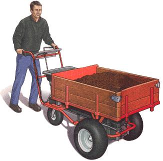
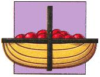
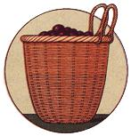
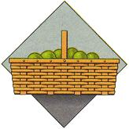
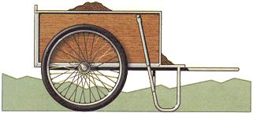
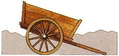
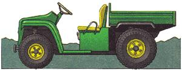
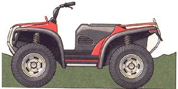

Tools and techniques to get your stuff from here to there, hither to you.
Keeping up with a self-sustainable country place involves a tremendous amount of fetching, h auling; lifting, pitching, shoveling, racking, and stacking. If you happen to be in the early stages of swapping a sedentary but rushed, high-stress city existence for an active but self-paced life on the land, you're likely content-even eager-to accomplish much of this work using muscle power at a deliberate pace. I'll never forget how I relished the honest sweat and sore muscles of hand-digging my first garden and hoeing my first-ever green pea vines in the clean country air. But soon enough you realize the day only has so many hours and the human back only so much endurance. And when the garden expands from a few rows of peas to an acre or more of varied produce, plus fields of staple grains and potatoes, the hauling-by-hand becomes work ...hard work.
These days, as I begin carving yet another new place out of a patch of north country woodland, much of my time and cash investment goes to lessening my physical load now and for the future.
The first step is to reduce or eliminate heavy hauling chores. If you can avoid it, why hand-carry heavy things, forcing yourself to haul your body weight up hills or over long distances in addition to the load
The second step is to reduce the number and weight of things needing to be hauled. And the third step is to reduce the distance across which things need to be moved.
Only then should we consider mechanical load-easers, evaluating them in order of cost and complexity-ranging from baskets, bags, and harrows to sleds, skids, wheeled carts, and wagons to draft animals, engine-powered light haulers, and wheeled automotive-type vehicles.
At the new place, I have several immediate tasks that are typical of new homesteads: short-hauling moderately bulky or heavy furnishings and equipment, including a wood-fired heating and cooking stove and water heater, an electric generator, and machine tools; moving rock, soil, and tree stumps to turn the thin soil on a lightly wooded hillside into a terraced kitchen garden; digging and trenching a water supply and disposal system; moving stones to buttress the cabin foundation against stream erosion; hardening the access road and clearing it of snow; and getting in firewood.
Here, we'll cover a range of appropriate technologies to handle homestead-specific hauling chores, which too often are accomplished with more physical effort, or else more complex, costly, and yet less capable machinery, than we really need.
Rather than fighting gravity, Native Americans and old-time Yankee farmers put this force to work. Campgrounds and Colonial homesteads were located on good farming flats in valleys, where gravity helped to move stuff, whether loose or loaded on canoes, sleds, wagons, pack mules, or in a backpack. Firewood logs and foundation stones need a lot less persuasion to roll downhill than up. Plus, low meadows and hollows are where water naturally flows to, making springs or streams more likely to be handy and a well to groundwater less of a dig.
Also, since it was, and remains, vastly easier to haul apple boxes uphill empty and then to haul, roll, or skid them down full, hilltops were used to plant fruit trees. This is still true in frost-prone apple growing country. Sun hits the peaks first and stays there longest, to the crop's advantage. And on chilly spring mornings, gravity pulls the more dense cold air down, draining any blossom-killing frost off the hilltops and into the valleys, saving the nascent fruit buds.
In summer, the relatively low temperature of the lowlands helps mitigate the discomfort of a heat wave. In winter, it will intensify the chill of a cold snap to be sure, but you can throw another log in your woodstove and open the damper for a lot less than you'd pay for air conditioning in summer. If you are considering the site of a country home, take nature's most powerful motivating force into consideration and design accordingly. But if the laws of nature should fail you...
Harvesting the garden (small amounts for supper, not acre lots for storage) is one of the greatest delights of country living. Your fresh produce shouldn't be dumped in a bucket or mangled together in a paper bag. Harvest calls for women in long dresses, wide-brimmed summer hats with ribbons, bare feet (sandals if the soil is rocky) and a long, shallow harvest basket, where your own homegrown green beans, lettuce, tomatoes, and sweet corn can be laid out in full, sun-dappled, dew-bespeckled glory.
But it's hard to find work baskets anymore. Even on the Internet, or in the few surviving big-city specialty shops, what baskets you do locate are either tribal artifacts, wildly imaginative, expensive (and useless for carrying anything) works of modern basket art, or fanciful containers for gourmet foods, soaps, or extravagant gift items.
For years, the upscale Anglophile mailorder country catalogs sold-along with $20 imported "planting dibbles" (varnished, Stone Age-style pointed sticks) and $60-and-up Hawes brass watering cans-equally expensive imported "trugs": open-ended, scoop-shaped harvest baskets designed for collecting and marketing long-stemmed flowers. Eliza Doolittle baskets.
We haven't seen a genuine British trug for a while, but this spring, Johnny's Selected Seeds is selling a real, old-time American harvest basket. It measures about 1' x 2', is made of natural reed or wood slats with a sturdy wood-split handle, and has a shallow rim all around (so the tomatoes won't roll out). A perfect basket for the perfect harvest.
Harvesting is a two-handed job, requiring you to hold the stalk, branch, or vine with one hand while you pull off corn, peas, beans, or tomatoes with the other. You can set a flat basket on the ground while you harvest, which is fine if you are collecting selectively and at your leisure for supper. But for bulk harvest, it's best to have both hands free, full-time. Nothing is as good as a soft basket that will stay open, but flex as you move among the vegetation.
For years, we've used those two-handled, recyclable plastic carry-out bags you get at the grocery. In the garden, I run my belt through the handle holes. The better-quality bags usually last long enough to be filled once or twice. They're flexible enough; in fact, they're so floppy they're tough to keep open, which means fingering around for the rims with each handful of veggies.
So I'm tickled to see that harvest baskets are appearing again in the catalogs. You'll find a nice selection in the one from Shepherd's Garden Seeds of Torrington, Connecticut. Long a highly selective supplier of premium seed from Europe, Shepherd's offers a lovely little four-quart, European-style willow berry basket with twin willow belt loops that is perfect for two-handed collecting of pole beans, arbor grapes, and, of course, cane and bush berries. This year they also offer a 21"-long picnic/market basket made in the U.S. of split-ash fastened with brass tacks and with a steam-bent wood-slat handle, plus an industrial-strength corrugated/galvanized steel-wire basket with a pair of fixed bails and a rolling wood dowel handle made for potato harvesting in Germany.
Lehman's is offering its own American-style berry basket with leather belt loops. It is sturdy enough to hold up on an apple-harvesting ladder, as well as in the berry patch.
Cumberland General Store offers, among its extensive collection of barrels and kegs, the largest variety of baskets that I've seen lately. Made of wire, reed, or wood splits, they come in a variety of shapes and sizes, the largest being a two-bushel, oak-split manure basket with steel-reinforced straps and rope handles. Other options include a real pie basket with little wooden trays on legs to keep desserts from getting squashed; vertical-stave apple baskets (by the dozen only); a one-and-a-half bushel Shaker harvest basket made of ash splits with a pair of locked-in hardwood handles; and the ultimate in old-time household-hauling efficiency-a staircase basket that fits on two steps of a standard stair. Put up-going stuff in it till it's full, then make one trip up. Repeat for the down going trip. No multiple-story country home should be without one or, perhaps, two.
In ancient times, mankind discovered that by putting a pole through handles of a large, heavy-duty basket, two people could carry more than one. Later, even larger baskets, jars, sacks, and boxes were fitted with pairs of handles and poles, and the two- or four-man barrow was born.
Many nomadic cultures tied together one end of a barrow's pole-pair and strapped the other to a beast of burden. This primitive hauler was named a travois by French voyageurs, who saw it used by Amerindians. Curiously, a wheel was not fitted to the ground end of the travois till the year 444 A.D. in China. Thus was born the infernal two-handled/single-wheeled wheelbarrow-a tippy vehicle in the hands of any but a worker experienced in maintaining enough forward speed to retain equilibrium.
These early-type wheelbarrows are easy enough to build (see Will Shelton's plans in MEN 165). But if you aren't up to the construction job, you can purchase a handmade Amish version of oak or ash frame, with removable poplar sides, and a steambent hickory wheel with eight mortised wooden spokes and a steel tire (in two sizes) exclusively from Lehman's Non-Electric Catalog. The wheel alone is worth the $150 to $250 cost; it is a work of a nearly lost art.
But let's back up here for a bit more history. The wheel, as many of you may know, was invented around 6,400 B.C. in the cradle of civilization: the Tigris-Euphrates valley of what is now Iraq. It quickly spread throughout the trading nations of the ancient world. Two-wheeled, two-horse Greek and Roman battle chariots were perhaps the most dramatic application. But the Romans never figured out the yoke and so were unable to make best use of draft animals.
More plebeian than chariots, but more useful, was the Medieval high-wheeled trundle cart, particularly when yoked to domesticated animals-from dogs that pulled cheese carts in the Netherlands to single and paired bullocks, oxen, and water buffalo that pulled lumbering carts on four- to six-foot-high, solid-wood discs in peasant societies worldwide. Dubbed tumbrels by the French, these carts are most famous for having carried aristocrats to the guillotine during the French Revolution. Today, they are most commonly used as farm carts to haul manure from barn to field. Their high wheels give good clearance to negotiate rocky, rutted country roads and fields.
They are weighty-especially when fitted with heavy, primitive unspoked wheels-but are built to balance front-to-back on their axles. With a draft animal hitched up, they are loaded to be just slightly forward-weighted for easiest hauling. Unhitched, shafts are pushed up and the beds tip backward to dump contents almost automatically.
The tumbrel's balance principle and highwheeled ability to function in rough country was adapted by Eddy Robinson, a founder of the old Garden Way consortium, in designing the familiar stained wood and shiny metal-framed Garden Way Cart of the 1970s and '80s. The carts are still in production, along with a dandy two-wheeled firewood carrier, by Garden Way successor, Carts Vermont. The design is also being copied, with slight modifications, by several other manufacturers.
These attractive, angle-steel-framed, stained-plywood boxes on chrome-spoked wheels come in three sizes: Model 16 (4-cubic-foot capacity), Model 20 (6.5-cubicfoot capacity) and Model 26 (a whopping 13.4- cubic-foot capacity). Each is named for the diameter of its wheels. Prices are in the familiar $150 to $250 range, depending on size. The largest size is well suited to the same chores as its ancient forbear, though the large sides can get floppy in time. Amazingly lightweight for their carrying capacity, box carts with spoked wheels are tough and weatherproof, but best restricted to the moderate 200- to 400-pound loads specified in the instructions. I overloaded one of the small models with fieldstone once and collapsed a wheel when I pulled it down a six-inch step in a retaining wall. My fault, not the wheel's.
You can buy box carts with steel bodies (though these rust-especially when exposed to acids of manure or compost) or with (ugly) solid-plastic wheels. Several garden catalogs sell a super-light collapsible version that was designed to carry groceries for boaters, but is great if your storage space is limited.
All of these box carts feature light weight and perfect balance, which is ideal for garden use, but none is for heavy hauling. If you want a heavy-duty box cart, look for the Muller stable cart, sold to gardeners by mail through Pinetree Garden Seeds. The whole undercarriage of the Muller Smart Cart is aircraft-grade tubular aluminum alloy. Spokes on the 2" x 20" full-pneumatic-tired wheels are screw-torqued for high-load capacity; they'll carry 400 pounds without noticing it. The rot-free box is molded of polyethylene, holds seven cubic feet, and pops out of the frame (say, if you want to use one body for feed and another for manure, without having to wash them out in sub-zero winter temperatures). Axles are set a bit forward of center-of-gravity and the front is angled, so it won't revolve up on the wheels when the front is filled, but it will tip and stand on-end so manure or gravel or compost can be raked in and out. I have filled mine with compost, sand, and crushed rock and used it as a spreader, much the way a dump truck lays gravel. By tipping it up and wiggling the handle as you pull or push, you can apply relatively thin, even layers of material on garden, drive, or road. Medium-sized by box cart standards, it's priced with the large-sized models.
For the ultimate in garden haulers, we can't help but shire our enthusiasm for the DR (restricted) POWERWAGON by Country Home Products (CHP) of Vergennes, Vermont, another offspring of the same folks who founded the old Garden Way. This is the first powered-walking cart to be marketed to the general public at reasonable cost. Commercial gas- and electric-powered concrete and grain hoppers and such are available, but at the cost of a new automobile. The DR comes in two models, priced in the range of a good rototiller. Both feature Tecumseh commercial-quality engines and Peerless (by Tecumseh) transmissions. They're available with electric starters and have free-wheeling drive wheels and a third castering rear wheel for maneuverability. You can get a dumping stake body or a molded plastic hopper. The larger Pro model has a six-horse-power engine, four forward speeds, and a weight capacity of 800 pounds. It features a tractor-type transaxle with four forward speeds and reverse.
The four-horse-power Standard model can haul 500 pounds and has two forward and one reverse speed. Its transmission and differential are separate units and it is powered by a drive chain to a large gear on the axle.
At a bit over six feet, the Pro is about a third longer than the Standard, and for best results, it needs about 100 pounds of ballast (bricks) to be placed in a weight tray under the body. Both models are excellent-particularly if most of your hauling is on open land, and can make a wide range of country-living chores possible for a lot of folks whose mobility is limited.
I've got tons of firewood, rock, soil, sand, and concrete to haul over relatively short distances, but in country so rugged and heavily treed I couldn't move it manually or in even the smallest truck or jeep. A pack goat, burro, or small mountain horse would do fine, but I lack facilities for livestock and don't want to be tied to one place at this point. So I will be ordering a Standard-model POWERWAGON for delivery next spring. It is the only machine I know that will do the hauling that makes the work possible. I'll miss the extra power and two extra forward speeds of the Pro on the hills, but prefer the more compact dimensions of the Standard. I don't look forward to stray sticks getting in the exposed chain and drive gear, but will be operating in mud and shallow water, where I'll worry less about the straightforward chain-and-sprocket drive system than I would about a sophisticated transaxle.
I'm close enough to central Vermont that I can pick up the machine at the factory and save the $100 shipping fee. If you have more stomach for debt than I do or recommend, CHP offers a credit plan with low monthly payments. And (unlike many revolving credit rip-offs) you can pay it off, all or in part, at any time. Once you've become a customer, CHP informs you of periodic factory showroom sales and savings on reconditioned returns. They're good folks. Their late founder used to sign his letters, "Yours for fairness and good faith in all things."
If distances on my place were greater-as on a farm-sized property or a ranch where livestock can be scattered for miles-I'd opt for one of the new utility all-terrain vehicles (ATVs), even though their cost is in the $7,000 range.
ATVs have evolved from yowling, smoky little two-cycle hill-climbers to competent, quiet, clean-burning, heavy-hauling utility vehicles for anyone wanting to travel farther or faster in the woods or to haul more than legs alone can.
In recent years both ATV users and the motorcycle manufacturers who developed them have recognized that the machines can fill a spring-to-fall off-road utility role similar to that of the snowmobile in winter.
The Japanese bike makers have all come out with utility models featuring auto-type steering, four-cycle engines, and cargo racks front and rear. They come in hunter-camo colors and tend to have names like Grizzly and Lobo. Both original manufacturers and aftermarket suppliers are turning out carts, mowers, plows, and small-scale fanning implements that will let you equip an ATV as a mini-farm tractor, much the way the post-war civilian jeep was in the late 1940s.
The ATV market is being challenged of late by North American non-bike makers. Canadian snowmachine and small-aircraft-engine maker Bombardier introduced its Traxter in 1998. This innovative land machine is equipped with a hot Rotax airplane engine, new stepthrough ergonomics, a five-speed tranny with hi-fi range, and the largest fuel tank in the field.
But the most notable new ATV has to be the Gator from Big Green tractor maker, John Deere. It is a miniature pickup truck with two seats, a steel bed, two or four reardrive wheels and an optional diesel engine. This machine was engineered to haul up to 1,200 pounds-including passengers-through anything the woods, desert, mountains, or swamps can hand it. The JD/Kermit-Green and Yellow Gator or the olive drab and camouflage Trail Gator will do most everything a half-ton 4x4 pickup will do (and much that it can't), but more nimbly, and at a fraction of the price of a road vehicle.
The Trail Gator tops my wish list.
If you live in deep-snow country, a snowmobile or two may be an excellent hauler investment. Not only can these motorized sleds go where no other machine can, they can eliminate hours of snow removal on interior roads and/or hours of mushing on snowshoes-taking hay, for example, to the beef steers wintering on the "back 40." If you have a lot of hay to truck or firewood to haul, you'll also want a sled-trailer, as well as a made-for-the-use suit, helmet, and boots. At $5,000 for starters (new up to twice that and half the price used), a good snow machine is not a frivolity. But how better to set maple-tapping spouts in a 200-tree sugar bush in three feet of heavy, rotting, late-February snow? A snowmobile not only can get you there in any weather, its wide track provides a stable work platform on top of the snow. You can run fence and make repairs from a sitting position on a sled. Most important, a snowmobile offers a way out in an emergency. In the North, ordinary road-travel restrictions are lifted during snow emergencies, and folks from outlying areas come clear into town on their sleds for necessities.
The other go-anywhere hauler option to consider is a burro, or donkey. Probably best adapted for the other climatic extreme-desert areas-a burro will haul a week's supply of firewood, six to ten hay bales, a refrigerator, or six month's groceries up mountains without complaint. We hesitate to recommend taking on full-size livestock-a family cow, a team of draft horses-all at once, from scratch, and strictly for their utility. Housing, pasturage, feed and water supply, manure management, veterinary fees, and trappings are all major undertakings that far outweigh the advantages of a few quarts of milk or a genuine 2-hp. log-hauler. But a burro can live happily with no more shelter than a leafy shade tree in summer. It will require the usual stock-management practices; you'll need, for example, to examine your woods for poison plants such as mountain laurel before turning the burro out. But space and care requirements are a fraction of those needed for a pony or even a dairy goat. To find a burro, ask around. There's a "jackass-keeper" in most every county town who'll describe the (often-well-disguised) endearing characteristics of this mini-Clydesdale. He or she will fill you in on needed feed supplements, hoof care, and shot and breeding schedules, as well as the basics of the X-frame pack saddle, including how to make the frame and load it. Look on page 108 of your new '99 revised Lehman's Non-Electric Catalog for a photo of Jack Schuck and his 16-year-old donkey Bill hauling a 150-pound refrigerator into the San Gabriel Mountains.
SOURCES
Johnny's Selected Seeds: Foss Hill Road, Albion, ME 04910; 207-437-4301; www.johnnyseeds.com
Shepherd's Garden Seeds: 30 Irene St., Torrington, CT 06790; 860-482-3638; www.shepherdseeds.com
Lehman's Non-Electric Catalog: PO Box 41, Kidron, OH 44636; 330-857-5757; e-mail: info@lehmans.com; hearth.com/lehmans/lehmans.html
Cumberland General Store: #1 Highway 68, Crossville, TN 38555; 800-334-4640; www.cumberlandgeneral.com
Carts Vermont: 1890 Airport Parkway, South Burlington, VT 05403; 800-732-7417; e-mail: cartsvt@together.net ; together.net/~cartsvt/
Pinetree Garden Seeds: PO Box 300, New Gloucester, ME 04260; 207-926-3400; e-mail: superseeds@worldnet.att.net ; www.superseeds.com/
Country Home Products: Meigs Road, PO Box 25, Vergennes, VT 05491; 8004468746; www.countryhomeproducts.com
Bombardier Traxter: your local Bombardier dealer; www.bombardier-ATV.com
John Deere Gator: your local John Deere dealer;www.deere.com
|
 ILLUSTRATION: STEVE COPPINS DR POWERWAGON: Finally, an affordable powered walking cart for most all your hauling needs. |
 Trugs are great for gathering |
 Shepherd's willow berry basket. |
|
 Shepherd's split-ash market basket. |
 Carts Vermont makes a garden box cart in three sizes, all light-weighted and perfectly balanced. |
 The classic tumbrel's high wheels make it perfect for hauling heavy loads over rocky, rugged terrain. |
|
 John Deere's Gator can do most everything that a half-ton 4x4 pickup can do-and then some. |
 Canadian snowmobile giant Bombardier recently introduced the Traxter, it's answer to the 21st century all-terrain vehicle. |
|